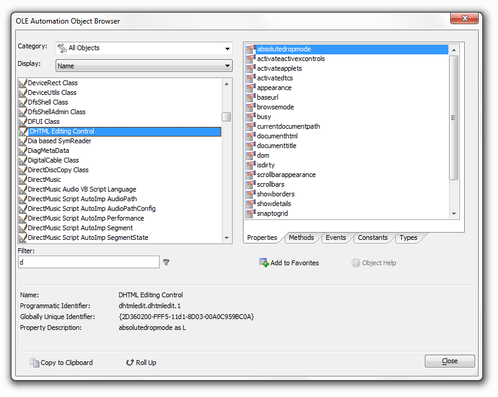
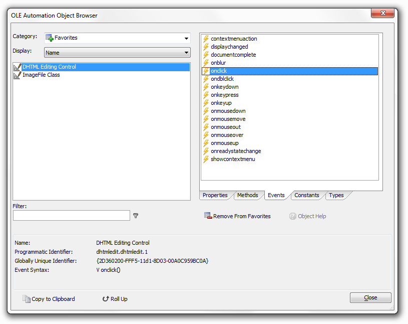

OLE Automation Object Browser
The OLE Automation Object Browser allows you to investigate the properties, methods, events, and constants of ActiveX controls on your computer.
When using the Xbasic Code Editor, selecting View > OLE Automation Browser displays the new browser. The list on the left side of the dialog switches between views of the controls' product names and programmatic names (what you actually use when you are programming). The list of on the right displays a scrollable list of the information that you will need to successfully use the control.
The information on the bottom will be of interest to advanced programmers, who want to investigate any additional control properties that may be stored in the registry.

You may select controls and add them to your Favorites list. The following image shows the properties of the Microsoft Common Dialog Control after it was saved as a favorite, and then selected from the Favorites list.

See Also